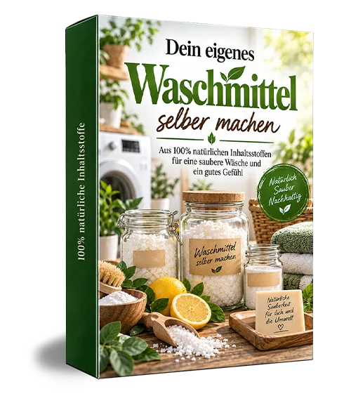
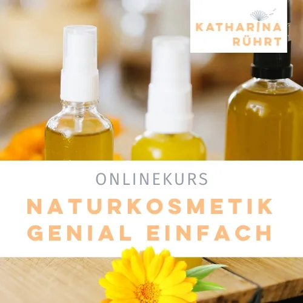

Naturseifen sieden
Produktprofil · Marktplatz-Daten 2026-10-09 · Verkaufsseiten-Recherche 2026-10-09 · Kategorien: Green Products & Environmental Protection, Hobby & Craft, Marketing Services
- Naturseifen sieden ist ein/e Mitgliederbereich & Videokurs in Green Products & Environmental Protection und Hobby & Craft, vertrieben über den Digistore24-Marktplatz von Anbieter Katharinaruehrt, gelistet seit 2023-11-17.
- Listenpreis $69.55; Digistore24 meldet 11 % Checkout-Konversion, 0.9 % Stornierungsquote und 25 % Affiliate-Provision.
- Verdienst pro Verkauf (Affiliate): $13.37 (Anbieter-seitige Statistik, keine Prognose).
Interesse an Naturseifen sieden? Aktueller Preis, Boni und Garantiebedingungen finden Sie auf der offiziellen Seite des Anbieters:
Offizielle Verkaufsseite ansehen
Affiliate-Link (Werbung) — wir verdienen ggf. eine Provision, ohne Mehrkosten für Sie.
Marktplatz-Daten
| Produkttyp | Mitgliederbereich & Videokurs |
|---|---|
| Preis | $69.55 (Single payment) |
| Affiliate-Provision | 25 % |
| Garantie/Rückgabe | Laut Verkaufsseite des Anbieters — vor dem Kauf auf der offiziellen Seite prüfen |
| Anbieter | Katharinaruehrt (gelistet seit 2023-11-17) |
| Marktplatz-Statistiken* | Checkout-Konversion 11 % · Stornoquote 0.9 % · Verdienst/Verkauf $13.37 |
* Anbieter-seitige Statistiken von Digistore24; sie hängen von der Traffic-Qualität ab und sind keine Prognose.
Marktplatz-Beschreibung des Anbieters
Seife sieden ist nicht kompliziert! In diesem Workshop zeige ich dir, wie du dir deine eigenen Seifen herstellst. Ich erkläre dir, wie du deine Küche mit wenigen Handgriffen zu einem geeigneten Arbeitsplatz machst und sicher mit der Lauge umgehst. Wenn du weißt, wie es richtig geht, ist Seife sieden genial einfach. Schon bald kannst du dich über deine erste selbstgesiedete Seife freuen, die herrli…
Von der Verkaufsseite des Anbieters
Seitentitel: Seife sieden im Kaltverfahren – Onlinekurs für Anfänger
Meta-Beschreibung: Lerne Seife selber machen im Kaltverfahren – sicher, einfach & mit Spaßgarantie. Jetzt den Onlinekurs zur Naturseife buchen & direkt loslegen!
Hauptüberschrift
Seife sieden lernen
Abschnitts-Überschriften
- Seife sieden ist nicht kompliziert!
- Nach diesem Onlinekurs...
- Seifen sieden - Onlineworkshop
- Das erwartet dich:
- Das sagen meine Teilnehmerinnen:
- Was du noch bekommst
- Das steckt noch im Seife sieden Onlineworkshop
- Der Warnhinweis beim Seife sieden müsste lauten:
- Wusstest du...
- Seifen sieden ist genial einfach! Ich zeig dir, wie es einfach und sicher geht und du Schritt-für-Schritt zu deiner ersten, duftenden Seife kommst.
Einstiegstext
Schon bald kannst du dich über deine erste selbstgesiedete Naturseife freuen, die herrlich nach Kräutern duftet. Und das Beste ist: Seifen sieden macht irre Spaß!
... brauchst du nie wieder Duschgel oder Flüssigseife fürs Gästeklo kaufen und sparst Unmengen an Plastik.
... freust du dich über ein vielseitig einsetzbares Ergebnis , das du unter der Dusche und zum Hände waschen nutzen kannst.
... weisst du sicher, was in deinen Seifen drin ist - Bye Bye Palmöl und Mikroplastik!
Recherche-Methode: rohes HTML · 1069 Wörter · Qualität: rich · recherchiert am 2026-10-09. Vollständige Recherche-Datei (MD) ↗
Wie Produkte dieser Art geliefert werden
Allgemeiner Hinweis zu diesem Produkttyp (keine anbieterspezifische Anleitung): Videokurse laufen über einen Mitgliederbereich: nach dem Checkout erhalten Sie Zugangsdaten per E-Mail und können die Lektionen in Ihrem eigenen Tempo streamen. Für die genaue Anwendung von Naturseifen sieden sind die offizielle Verkaufsseite und die enthaltenen Materialien maßgeblich.
Gut zu wissen
- Keine Garantie-Formulierung in unserer Recherche gefunden — bestätigen Sie das Rückgabefenster auf der offiziellen Seite, bevor Sie kaufen.
Häufige Fragen zu Naturseifen sieden
Was ist Naturseifen sieden?
Naturseifen sieden ist ein Angebot des Typs „Mitgliederbereich & Videokurs" im Digistore24-Marktplatz, Anbieter: Katharinaruehrt, gelistet seit 2023-11-17. Eingepflegt unter Umwelt & Nachhaltigkeit und Hobby & Handwerk. Digistore24 wickelt Checkout, Lieferung und Rückgaben ab.
Wie viel kostet Naturseifen sieden?
Der Digistore24-Marktplatz listet es für $69.55 (single payment). Preise legt der Anbieter fest und können sich ändern — der Marktplatz-Eintrag oben zeigt den Schnappschuss; die offizielle Verkaufsseite zeigt den aktuellen Preis.
Gibt es eine Geld-zurück-Garantie für Naturseifen sieden?
Unsere Verkaufsseiten-Recherche hat keine explizite Garantie-Formulierung gefunden. Viele Digistore24-Produkte bieten 60 Tage Geld-zurück, aber das legt jeder Anbieter selbst fest — bestätigen Sie es auf der offiziellen Verkaufsseite, bevor Sie kaufen.
Ist Naturseifen sieden seriös?
Wir bewerten keine Seriosität — wir veröffentlichen überprüfbare Zahlen: Anbieter Katharinaruehrt (gelistet seit 2023-11-17), Checkout-Konversion 11 %, Stornoquote 0.9 %, Affiliate-Verdienst/Verkauf $13.37 (alles Anbieter-seitige Marktplatz-Statistiken). Lesen Sie unsere 6-Punkte-Bewertungsmethode und entscheiden Sie anhand der Zahlen — oder diskutieren Sie Naturseifen sieden auf GitHub.
Wo kann ich Naturseifen sieden sicher kaufen?
Nur über die offizielle Verkaufsseite, die auf dieser Seite verlinkt ist (Checkout und Rückgaben laufen über Digistore24). Prüfen Sie dort Preis und Garantie vor der Bestellung. Der Link ist ein Affiliate-Link — der Kauf unterstützt diese Website ohne Mehrkosten für Sie.
Ähnliche Angebote in Umwelt & Nachhaltigkeit

MIETfrei – löst großes gesellschaftliches Problem vieler Menschen in Deutschland Wohnraum finden trotz extrem angespanntem Wohnungsmarkt für einen günstigen Pre

Unsere Plattform Affiliateking.net – nutze sie, um zusätzlich zu den Provisionen saftige Zusatzeinnahmen zu kassieren. Hier direkt zur Partnerseite + Werbemitte
Unsere Plattform Affiliateking.net – nutze sie, um zusätzlich zu den Provisionen saftige Zusatzeinnahmen zu kassieren. Hier direkt zur Partnerseite + Werbemitte

Noch MEHR mentale Nahrung! - 50% Provision 11 Mindvideos, die dein Bewusstsein auf ein deutlich höheres Level bringen werden! Glück und Lebensfreude Gesundheit
Weitere Angebote von Katharinaruehrt

Für alle die Lust haben, ihre Kosmetik selbst herzustellen – wirkungsvoll, nachhaltig und mit wenigen Zutaten. Nach diesem Kurs brauchst du keine teure Hautpfle
Dein Zuhasue soll sauber sein und die Umwelt auch? In diesem Workshop zeige ich dir, wie du dir deine Putzmittel selbst herstellst. Und zwar aus umweltfreundlic
Dein Kaffeesatz ist viel zu schade, um ihn wegzuwerfen. Ich hab da eine Idee:Mach Naturkosmetik draus! Ich zeige dir, wie du die wunderbar durchblutungsfördernd
Naturseifen sieden ist auch gelistet in
Hobby & Handwerk (178 Produkte) · Marketing-Dienstleistungen (297 Produkte)
Ähnliche Preislage in Umwelt & Nachhaltigkeit
Für alle die Lust haben, ihre Kosmetik selbst herzustellen – wirkungsvoll, nachhaltig und mit wenigen Zutaten. Nach diesem Kurs brauchst du keine teure Hautpfle
Magnet Motor 24 Mit dem MagnetMotor24 bieten Sie Ihren Kunden eine einmalige Möglichkeit Ihre Stromrechnung deutlich zu senken oder ganz abzuschaffen. MagnetMot
Das Produkt: Das Wattvoll Komplett-Paket ist ein digitaler PV-Ratgeber-Kurs (Mitgliederbereich): alle Kapitel, Rechner, Normenkatalog und Technik-Grundlagen — v
Dein Zuhasue soll sauber sein und die Umwelt auch? In diesem Workshop zeige ich dir, wie du dir deine Putzmittel selbst herstellst. Und zwar aus umweltfreundlic
Ähnliche Suchanfragen
Wo Sie es sich ansehen können
Wo Sie es sich ansehen können
Aktuelle Preise, Garantie und Boni finden Sie auf der offiziellen Verkaufsseite:
Offizielle Verkaufsseite ansehen
Das ist ein Affiliate-Link (Werbung) — kaufen Sie darüber, verdienen wir ggf. eine Provision, ohne Mehrkosten für Sie.
Quellen & weiterführende Informationen
- Offizielle Verkaufsseite (aktueller Preis, Garantie, Boni): www.katharinaruehrt.com/seife-sieden (Affiliate-Link)
- Öffentliche Digistore24-Produktseite: digistore24.com/product/525809
- Vollständige Recherche-Datei (Markdown, versioniert): content/products/53731-naturseifen-sieden.md
- Marktplatz-Kategorie: Umwelt & Nachhaltigkeit
Wie wir Produkte wie Naturseifen sieden bewerten
Sechs Prüfungen, ausschließlich mit offiziellen Marktplatz-Zahlen. Die vollständige Bewertungsmethode lesen · unsere Recherche-Standards & Kennzeichnung.
Fragen oder eigene Erfahrungen mit Naturseifen sieden?
Praxis-Tests veröffentlichen wir erst, nachdem wir ein Produkt selbst gekauft haben — aber Ihre Erfahrung hilft anderen Lesern: Diskussion zu Naturseifen sieden auf GitHub starten/verfolgen. Falsche Zahl gefunden? Korrektur melden — jede Seite zeigt ihre Datenstände, Korrekturen gelten für die ganze Website.